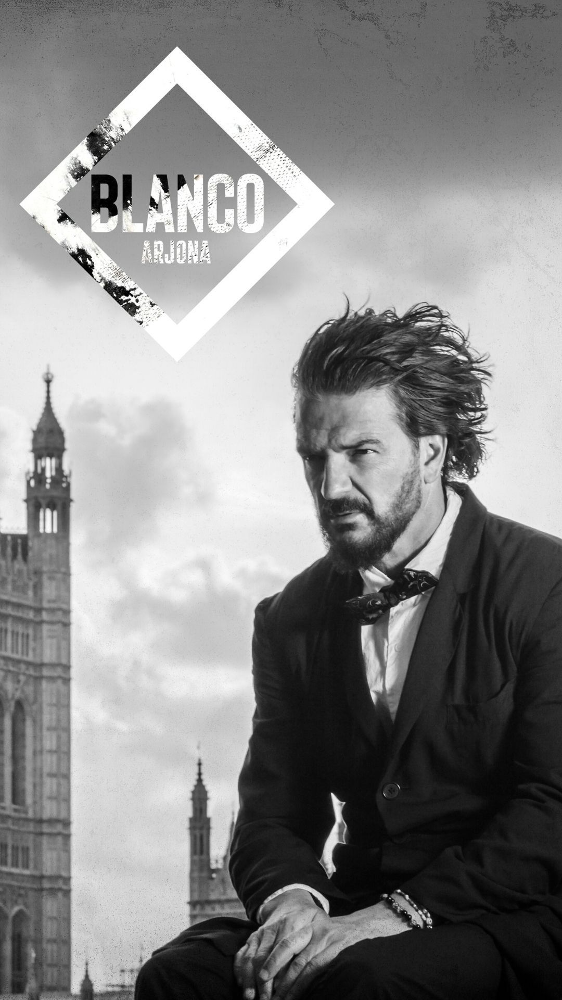

Recitales populares
WOS
Información General
- Lugar: Estadio Diego Armando Maradona
- Dirección: Gavilán 2151, CP 1416, CABA
- Fecha: 2023-10-28
- Hora: 8:30PM
Biografía
Valentín Oliva, nacido en Buenos Aires el 23 de enero de 1998, conocido artísticamente como Wos, es un cantante, músico, actor y freestyler argentino. Campeón de varias de las batallas de rap entre raperos de estilo libre es uno de los cantantes más reconocidos del momento. En 2018 lanzó su primer sencillo Púrpura un trap agresivo. En 2019 lanzó su primer álbum de estudio, Caravana, cuyo sencillo de presentación, Canguro, se colocó entre los 10 primeros puestos de las listas argentinas por varias semanas, y gracias al cual logró ganar tres Premios Gardel por mejor nuevo artista, mejor álbum/canción urbana y canción del año. Logró ser nominado para los premios Latin Grammy, por mejor nuevo artista. En 2020, sacó el EP Tres puntos suspensivos. En 2021, lanzó su segundo álbum de estudio, Oscuro éxtasis.
Tras su éxito, se presenta en Argentina nuevamente con un mix de sus últimos álbumnes que no te podés perder!
RICARDO ARJONA

Información General
- Lugar: Estadio Velez Sarsfield
- Ciudad: CABA
- Fecha: 2023-11-30
- Hora: 8:30PM
- Dirección: Av. Juan B. Justo 9200
Biografía
Édgar Ricardo Arjona Morales, nació el 19 de enero de 1964 en la localidad latinoamericana de Antigua, en Guatemala. Su estilo musical varía desde baladas a pop latino, rock, pop rock, música cubana, entre otros. Ha vendido más de 80 millones de copias de discos a lo largo de su carrera.
Es considerado uno de los artistas más exitosos en Hispanoamérica. Hasta 2021, Arjona había publicado diecisiete álbumes de estudio, cuatro álbumes en directo y veintidós recopilaciones. Cuatro de sus álbumes alcanzaron la primera posición en el Billboard Top Latin Albums en los Estados Unidos y diez alcanzaron la primera posición en Argentina. Cuatro álbumes ingresaron en el Billboard 200. Cuatro sencillos alcanzaron la primera posición en el Billboard Top Latin Songs y siete sencillos alcanzaron el puesto número uno en Billboard Latin Pop Songs. Su obra le valió numerosos premios y galardones, incluyendo un Grammy, un Grammy Latino, un premio «herencia latina»4 así como premios de la Sociedad Americana de Compositores, Autores y Editores, una antorcha de plata y de oro y dos gaviotas de plata del Festival Internacional de la Canción de Viña del Mar de 2010, dos premios de la Música Latina de 2010 y dos premios Orgullosamente Latino 2010.